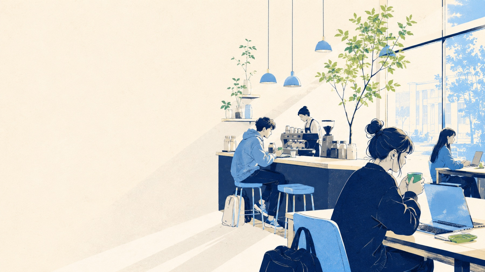
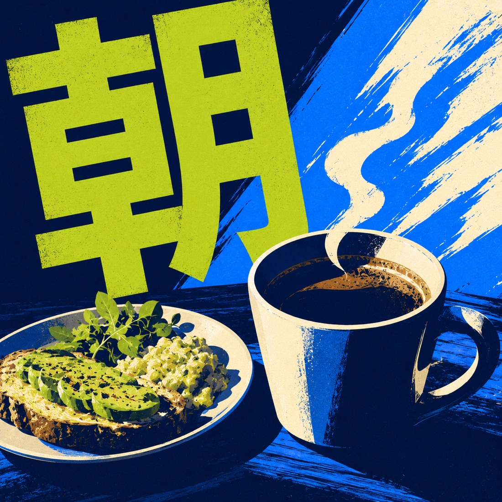
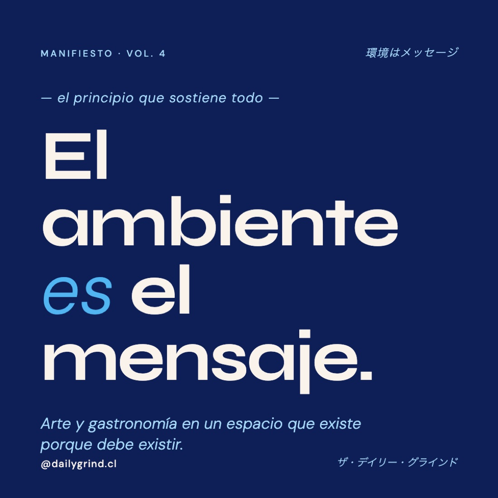
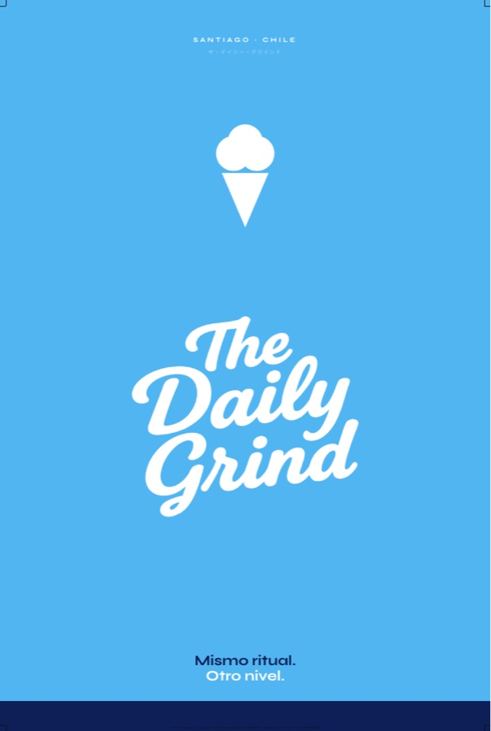

El ukiyo-e retrató la vida urbana de todos los días y la elevó a estampa. Eso hace The Daily Grind con el desayuno. Cada pieza de la marca es una estampa del ritual diario: papel, tinta, cielo y sello.
El ambiente es el mensaje.
Japón aporta el oficio y el silencio · el arte urbano aporta la energía y la calle · el café aporta el motivo
Todo lo que hace la marca se construye con cuatro materiales. Son la metáfora que ordena la paleta y las decisiones.
La base. Todo vive sobre papel crema con grano sutil.
El trazo. Reemplaza al negro en todo el sistema.
La firma cromática, reconocible a una cuadra.
El pistacho de la casa y el bermellón del hanko.
Un pistacho, un fondo profundo, un rojo. La dispersión que creció por archivo queda retirada: estos valores son los únicos.
Toca un color para copiar su hex. El bermellón es tinta de timbre: sellos y alertas, jamás decoración. El morado vive solo dentro del juego.
Cinco voces, cada una con su oficio. Sin letter-spacing: el tamaño hace el trabajo.
--font-display--font-body--font-jp--font-jp-game--font-monoEl español titula. 日本語 firma.
Traducciones verdaderas, refranes verdaderos, nunca decoración. Cada japonés nuevo entra al vocabulario con lectura y significado; si nadie del equipo puede explicar qué dice, no se publica.
| Japonés | Lectura | Significado | Dónde vive |
|---|---|---|---|
| ザ・デイリー・グラインド | za deirī guraindo | The Daily Grind | Firma katakana en tarjetas y palomas |
| 環境はメッセージ | kankyō wa messēji | El ambiente es el mensaje | Manifiesto |
| 第四巻 | dai yon kan | Volumen 4 | Marcador de volumen en todo el catálogo |
| 服も、コーヒーのように熟成する | — | La ropa, como el café, madura | Hang tag y packaging Vol. 4 |
| 御朱印帳 · 印 | goshuinchō · in | Libreta de sellos · sello | El Rally |
| 朝 · 旬 · 開 | asa · shun · kai | Mañana · temporada · abrir | Estampas urbanas |
| 完璧 | kanpeki | Perfecto | Golpe perfecto en El Ritual |
| とぶ | tobu | Saltar | Runner del portal |
Comparten paleta, tipografía y japonés; cambia la energía. La plantilla única mata el sistema — la variedad con la misma tinta lo sostiene.

Línea navy fina sobre cream, planos celestes, espacio generoso, luz diagonal. Para el sitio, el menú y todo lo que respire calma.

Kanji gigante, grano de serigrafía, brochazos, energía de afiche callejero. Para drops, eventos, colaboraciones y murales.

La palabra es la imagen: Syne gigante, acento sky itálico, sello japonés arriba a la derecha. Para el feed y las palomas.
Pantalla profunda con scanlines, cartuchos, personajes en canvas, katakana de interfaz. Para el portal, La Consola y El Rally.
Cero emojis editoriales. Los marcadores separan y dirigen; los sellos firman y celebran.
■ marca de la casa y timbre de lealtad · → dirige dentro del mundo · ↗ abre hacia afuera · · separa.
Nació en El Rally y firma los momentos: rally completado, décimo timbre, 完璧.
Texto circular en giro lento, guiño heredado del ícono Irrumpe.
Punto sky con anillo expandiéndose: señala lo que está en línea, el turno activo, la casa encendida.
Dos personajes de canvas habitan la capa juego. Por ahora sin nombres públicos: se identifican por signo, ♂ celeste y ♀ morado. El contorno navy y el vestuario de marca son la misma línea de la estampa serena.
Cuatro personalidades de borde se reducen a dos, con intención.
Sitio, menú, promos: radios suaves 8–16px, sombra ambiental grande y difusa.
Portal, La Consola, tarjeta de la casa: esquinas rectas, sombra dura desplazada en tinta.

Cada pieza impresa nace como HTML sobre el CSS compartido de su familia, se renderiza a PDF y guarda su proof al lado. El print habla el mismo idioma que la pantalla.
:root {
/* materiales */
--cream: #f9f3ec; /* papel */
--navy: #0e1e56; /* tinta */
--navy-2: #0b1845; /* tinta refuerzo */
--navy-3: #081234; /* fondo profundo (único) */
--sky: #51b5f2; /* cielo */
--sky-lt: #a6d9f8; /* cielo polvo */
--pistacho: #c4d870; /* firma de la casa (único) */
--pistacho-2: #7fa64a; /* pistacho hoja */
--shu: #cf3f2f; /* bermellón hanko + alertas */
/* soporte */
--beige: #e3ded9;
--beige-2: #d9d4cf;
--grano: #6f4e37;
--dark: #212529; /* solo texto largo editorial */
--mid: #6c757d; /* solo sobre fondos claros */
--white: #ffffff;
/* capa juego */
--el: #51b5f2; /* ♂ */
--ella: #8a4fd8; /* ♀ */
/* tipografía */
--font-display: 'Syne', sans-serif;
--font-body: 'DM Sans', sans-serif;
--font-jp: 'Shippori Mincho', serif;
--font-jp-game: 'DotGothic16', sans-serif;
--font-mono: 'DM Mono', monospace;
}